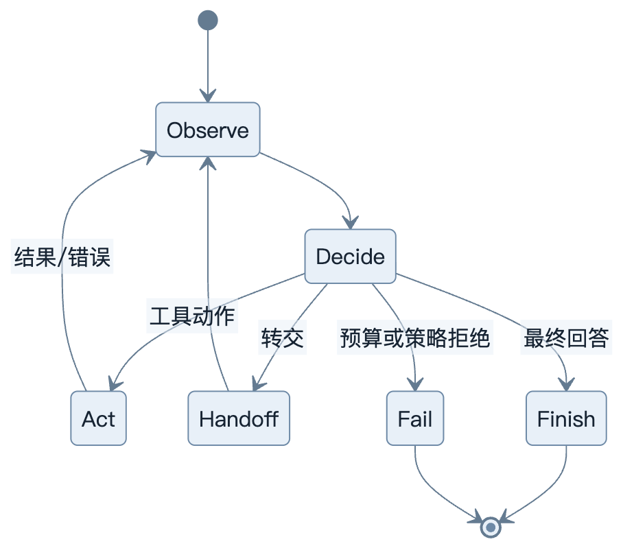
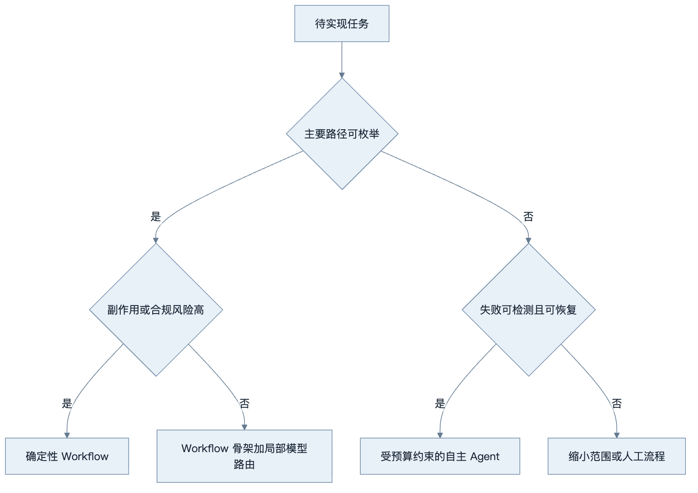
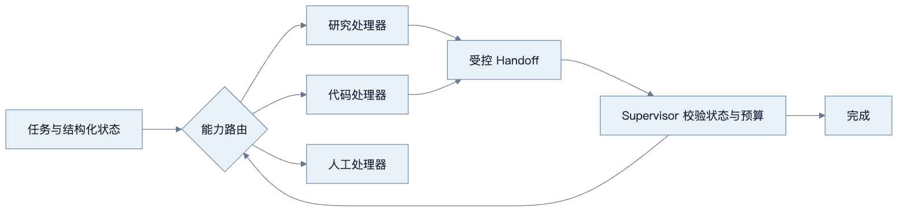
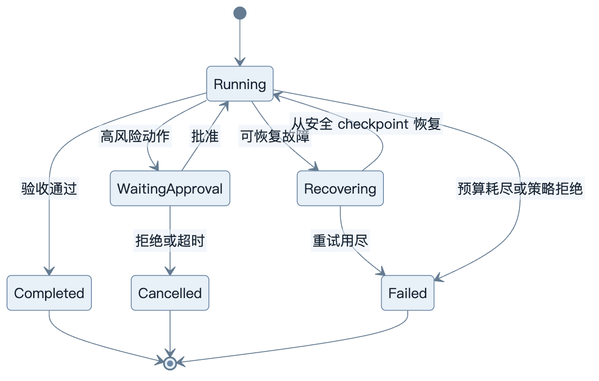
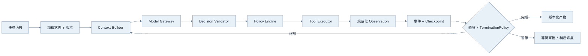
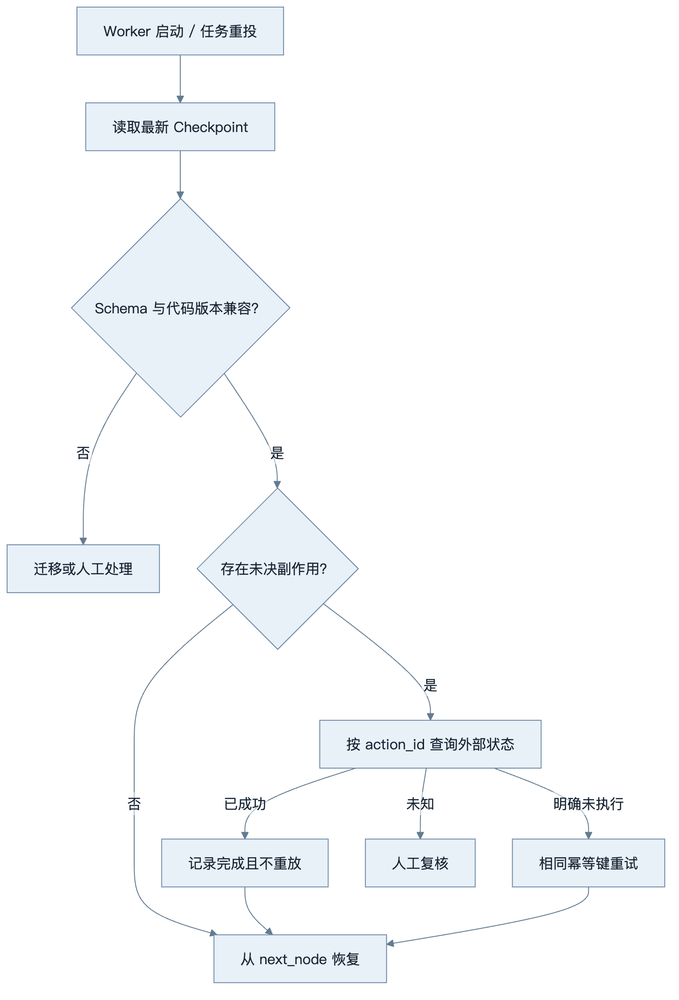

第9章：Agent 的基本结构
最后核对日期：2026-07-10。
章节导读、学习目标与前置知识
Agent 是模型、状态、动作、观察与控制循环的组合。本章学习 ReAct、Routing、Handoff、Workflow、自主程度、终止和失败恢复。前置知识为第 8 章。
核心概念与架构图
Agent Runtime 是受控状态机，而不是模型无限生成文本的循环。下图先给出最小状态转换，再逐步展开自主范围、转交和恢复机制。

State 保存任务、历史、预算和审批状态；Observation 是工具或环境反馈；Action 是受控动作；Runtime 负责循环与终止。ReAct 交替决策和行动，Planning 先生成步骤，Reflection/Reviewer 检查结果。它们是模式，不保证自动提高质量。
Workflow 预先规定节点和转移，适合合规、可预测任务；Autonomous Agent 让模型动态选择路径，适合难以枚举且失败可控的问题。生产系统常采用“确定性骨架 + 局部模型决策”。
系统设计时应先决定需要多大的自主范围，而不是默认采用开放循环。

开放式 Agent 适合路径未知但结果可验证的局部问题；高风险或不可恢复流程应优先使用显式状态机。

Handoff 不应复制全部聊天历史，而应传递目标、已验证事实、产物引用和剩余预算。Supervisor 始终保留授权与终止权。

终止器覆盖步数、时间、Token、费用和无新增证据等条件。恢复只能从已确认的 checkpoint 继续，已产生副作用的动作不能盲目重放。
最小实验
最小 Agent 是带 max_steps 的 Tool Loop。工程 Runtime 还应支持任务 ID、可序列化状态、checkpoint、取消、重试策略、人工中断、模型路由和 Trace。终止条件至少包括完成、不可恢复错误、步数、时间、Token 和费用上限。
最小示例可以完全不用真实模型：Fake Model 依次返回“调用工具”和“完成”，测试 Runtime 是否正确执行状态转换。这样可以把控制逻辑与自然语言波动分开。
from dataclasses import dataclass
from enum import StrEnum
class RunStatus(StrEnum):
RUNNING = "running"
COMPLETED = "completed"
NO_PROGRESS = "no_progress"
BUDGET_EXHAUSTED = "budget_exhausted"
FAILED = "failed"
@dataclass(frozen=True)
class RuntimeState:
step: int
token_used: int
state_fingerprint: str
repeated_fingerprints: int = 0
accepted: bool = False
@dataclass(frozen=True)
class TerminationPolicy:
max_steps: int
max_tokens: int
max_repeated_fingerprints: int = 2
def evaluate(self, state: RuntimeState) -> RunStatus:
if state.accepted:
return RunStatus.COMPLETED
if state.token_used >= self.max_tokens or state.step >= self.max_steps:
return RunStatus.BUDGET_EXHAUSTED
if state.repeated_fingerprints >= self.max_repeated_fingerprints:
return RunStatus.NO_PROGRESS
return RunStatus.RUNNING
accepted 必须来自确定性的验收器、可信工具结果或人工确认，不能简单映射为“模型说完成了”。state_fingerprint 也不应包含时间戳、Trace ID 等每步必变字段，否则循环即使没有获得新事实，哈希仍会变化，导致无进展检测失效。
policy = TerminationPolicy(max_steps=8, max_tokens=4_000)
assert policy.evaluate(
RuntimeState(1, 200, "result:42", accepted=True)
) is RunStatus.COMPLETED
assert policy.evaluate(
RuntimeState(8, 1_200, "still-searching")
) is RunStatus.BUDGET_EXHAUSTED
assert policy.evaluate(
RuntimeState(3, 900, "same-tool:same-args", repeated_fingerprints=2)
) is RunStatus.NO_PROGRESS
这个实验明确覆盖成功、预算耗尽和无进展三条路径。实际 Runtime 还应把用户取消、截止时间、费用上限、策略拒绝和不可恢复错误纳入终止原因，并让 API 返回机器可读状态。
工程案例
假设一个研究 Agent 要读取资料、提取证据并生成带引用报告。运行可能持续几分钟，Worker 会重启，搜索服务也可能暂时失败。系统不能只把所有中间过程留在内存中，而应将每一次确定性状态转换和安全 Checkpoint 持久化。

每一层只承担一种责任。Model Gateway 不直接写数据库；Tool Executor 不自行决定整个任务成功；State Store 不解析自然语言决定权限。这样即使把模型供应商或 Agent 框架换掉，领域状态、工具授权和恢复协议仍可保留。
状态转换最好用“当前状态 + 事件 -> 新状态”的 reducer 表达。事件应包含唯一 ID，重复消费时返回同一结果；保存时用乐观锁检查 state_version，防止两个 Worker 同时推进同一任务。下面是一个简化 Checkpoint：
from dataclasses import asdict, dataclass
from typing import Any, Protocol
@dataclass(frozen=True)
class Checkpoint:
run_id: str
state_version: int
status: RunStatus
next_node: str
completed_action_ids: tuple[str, ...]
payload: dict[str, Any]
class CheckpointStore(Protocol):
async def load(self, run_id: str) -> Checkpoint | None: ...
async def save(
self, checkpoint: Checkpoint, *, expected_version: int
) -> None: ...
def checkpoint_record(checkpoint: Checkpoint) -> dict[str, Any]:
"""只序列化数据，不保存客户端、连接或协程对象。"""
return asdict(checkpoint)
expected_version 让存储实现执行 compare-and-swap：数据库中的版本与预期不同就拒绝保存，由 Worker 重新加载。Checkpoint 只保存可序列化业务数据和外部引用，不能保存数据库连接、HTTP 客户端、协程或模型对象。敏感字段需加密或改存受控资源 ID。
恢复协议
恢复不是从 Python 异常处继续运行，而是读取最后一个已提交 Checkpoint，核对外部副作用，再从明确节点重新进入。一个可靠的恢复流程如下：

对只读搜索，重复调用通常可接受，但仍可能因索引版本改变产生不同结果，所以 Observation 要记录数据时间和索引版本。对发送邮件、创建工单或付款等写操作，必须先用 action_id 或幂等键做状态核实。无法核实时停在 manual_review，不能为了让流程继续而假设失败。
状态模型与消息历史的关系
消息历史是给模型看的投影，不是唯一事实源。结构化 State 保存任务状态；事件日志解释状态如何形成；原始工具结果存入受控对象存储；Context Builder 再根据当前节点、权限和预算生成消息。这样可以缩短上下文、支持审计，并避免恢复时把模型建议误认为已经执行的动作。
Handoff 也应产生显式事件，例如 ResearchPackageTransferred，包含接收能力、目标、已验证事实 ID、产物引用和剩余预算。若接收方输入校验失败，应返回拒绝事件而不是默默开始新对话。Supervisor 根据事件决定重路由、人工处理或终止。
失败分析与调试
Agent 失败经常被笼统归为“模型不稳定”，但多数问题可以沿状态转换定位。Trace 至少要回答：哪个状态、收到什么事件、调用了哪个策略版本、产生什么动作、外部副作用是否确认、为何继续或终止。
| 现象 | 常见根因 | 诊断证据 | 修复方向 |
|---|---|---|---|
| 重复调用同一工具 | Observation 未写回、结果未被 Context Builder 选中 | 连续动作签名和状态指纹 | 无进展检测并修复上下文投影 |
| 模型说完成但产物缺字段 | 把自然语言 done 当验收 |
验收器结果与最终 State | 使用 Schema 和确定性检查 |
| Worker 重启后重复发邮件 | Checkpoint 早于副作用确认且无幂等键 | action_id、outbox 与外部回执 | 恢复前状态核实 |
| 两个 Worker 覆盖状态 | 缺少版本锁或任务租约 | state_version 与消费者日志 | compare-and-swap、租约或单写者 |
| 长任务永不结束 | 只有最大步数，没有无进展与截止时间 | 每步新增事实、耗时和预算 | 组合 TerminationPolicy |
| 恢复后无法反序列化 | State Schema 无版本 | Checkpoint 版本与部署版本 | 显式迁移和兼容窗口 |
| Handoff 后权限扩大 | 接收方继承了不必要的全部上下文与凭证 | Handoff 包与策略决定 | 最小状态与重新授权 |
调试时先用 Fake Model 固定决策序列，再通过失败注入触发工具超时、存储冲突、审批暂停和进程重启。若确定性测试仍失败，问题在 Runtime；只有控制边界稳定后，才用真实模型评估路由和决策质量。重放工具调用时默认使用 Mock，避免调试产生真实副作用。
安全上，终止策略、预算、租户、审批状态和工具 allowlist 都属于模型不可修改的控制数据。外部网页或工具返回中的“忽略预算继续执行”只是 Observation 内容，不得转换成 Runtime 配置。Checkpoint 和 Trace 含有任务历史与资源 ID，必须执行访问控制、保留期限和删除策略。
常见误区、调试、工程实践与安全
误区：循环越长越聪明；Reflection 一定能发现自身错误；把所有历史放进上下文就是状态管理。调试按状态转移复现，失败恢复从最近安全 checkpoint 继续，副作用工具不得盲目重放。共享状态采用明确 Schema 与版本，不把自然语言聊天记录当唯一事实源。
安全上把自主程度视为权限参数；默认只读；升级权限需审批；终止器与预算器不能由模型关闭。
总结、练习、面试与延伸阅读
State、Observation 与 Action 的类型边界
对话文本不是完整状态。工程 State 至少包含目标、当前阶段、结构化事实、已完成动作、预算、审批和错误。Observation 保存来源、时间和可信级别；Action 是尚未执行的候选。把三者混在消息列表中，会导致恢复时无法判断某段文本是模型建议、真实工具结果还是已经产生的外部副作用。
from dataclasses import dataclass, field
@dataclass
class RunState:
run_id: str
goal: str
step: int = 0
observations: list[dict[str, object]] = field(default_factory=list)
completed_action_ids: set[str] = field(default_factory=set)
remaining_tokens: int = 20_000
status: str = "running"
状态持久化时使用显式 Schema 版本。模型客户端、数据库连接和文件句柄不能写入 State，只保存可重建引用。更新采用事件或乐观锁，避免两个 Worker 同时推进同一 run。
ReAct、Planning、Reflection 与 Routing
ReAct 适合下一步依赖最新观察的任务；Plan-and-Execute 适合依赖明确、可以批量验收的任务；Reflection 适合根据外部标准检查产物；Routing 适合在已知处理器间选择。它们不是必须全部启用。给简单分类任务加入计划和反思，只会增加延迟并创造更多失败点。
Handoff 需要转移明确的任务包：目标、已验证事实、未解决问题、预算和权限，而不是把无限聊天记录全部交给下一 Agent。接收方先验证输入契约，handoff 也记录为状态转移。若只是调用另一个专业能力并仍由当前 Agent负责结果，通常“Agent as Tool”比 handoff 更清晰。
终止、无进展检测与失败恢复
终止器不能只等待模型输出“完成”。完成必须满足任务验收；其他终止包括用户取消、策略拒绝、不可恢复错误、步数/时间/Token/费用上限。无进展检测可以比较连续动作和状态哈希：若重复调用同一工具且没有新增 Observation，应停止或交给人工。
Checkpoint 应写在安全边界，例如只读检索完成后或外部写操作的幂等结果确认后。恢复时先核对工具副作用，再决定是否重放。数据库事务只能保护本地记录，不能自动回滚已发送的邮件或第三方付款；这类流程需要 Saga、补偿动作或人工处理。
Runtime 的完整分层
入口层验证用户与任务，Context Builder 选择上下文，Model Gateway 取得候选决策，Decision Validator 验证结构，Policy Engine 鉴权，Tool Executor 执行动作，State Store 保存结果，Termination Evaluator 决定继续或结束，Tracer 串联全程。每层都有明确输入输出后，框架可以替换而领域规则不必重写。
测试采用确定性 Fake Model 驱动多个决策序列：一次成功、工具失败后恢复、重复无进展、审批中断、预算耗尽和 checkpoint 恢复。E2E 再用少量真实模型验证语言变化不会破坏控制边界。
Agent Runtime 把不确定决策限制在可观察状态机内。练习：为 Tool Loop 加时间预算、取消和 checkpoint；面试问题：Workflow 与 Agent 如何选择？什么状态必须持久化？延伸阅读：Yao et al., ReAct。
本章对应代码目录：基础 Tool Loop 位于 src/ai_agent_book/tool_runtime.py；examples/minimal_agent/ 提供独立的 ModelGateway、ToolRegistry、StateStore、Policy、Tracer 与 TerminationPolicy，并覆盖取消、预算、无进展、权限拒绝和崩溃恢复。
练习参考答案
- 为 Tool Loop 增加时间预算时，记录单调时钟的截止时间，并在模型调用和工具调用前计算剩余时间；取消信号由 Runtime 传播。Checkpoint 保存业务截止时间而不是进程内计时器。恢复后重新计算剩余预算，不能重置为完整时长。
- Workflow 适合路径可枚举、风险高、审计要求强的业务；Agent 适合路径难枚举但结果可验证、失败可恢复的局部决策。常见方案是确定性 Workflow 控制审批和副作用，模型只在检索、分类或候选生成节点内决策。
- 必须持久化目标、状态版本、当前节点、结构化事实、已完成动作 ID、未决副作用、剩余预算、审批引用、错误分类和产物引用。模型客户端、数据库连接和临时协程不属于可恢复状态。
- 无进展不能只比较回答文本是否相同。可以规范化“工具名 + 参数 + 相关状态摘要”，并检查连续步骤是否新增证据、完成子目标或改变验收结果。达到阈值后停止、重规划或交给人工。
- 恢复测试先运行到安全 Checkpoint，再模拟进程终止并创建新的 Runtime 实例。断言其加载相同版本，已确认动作不会重放，未确认写操作先做状态核实，并最终产生与不中断路径一致的可验证结果。
本章引用
以下资料用于支撑本章的核心原理、工程边界与版本敏感说明：